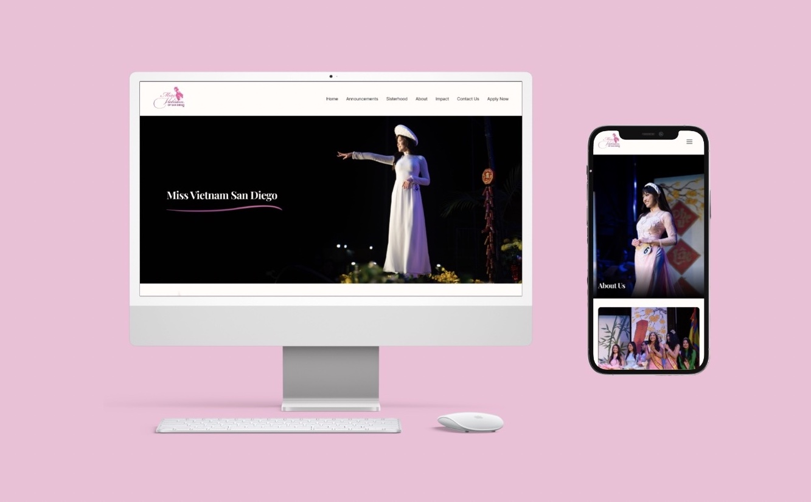
ROLE
UI/UX Designer
TIMELINE
10 Weeks
Jul '24 - Sept '24
TEAM
2 Stakeholders
7 Team Members
SKILLS
Design System
Figma Prototyping
OVERVIEW
Problem
Miss Vietnam San Diego lacked a dedicated website as its only online presence existed in the San Diego Tet Festival site, which made it challenging to attract contestants and sponsors, essential for the pageant’s growth. The absence of a unique online presence also hindered Miss Vietnam San Diego’s ability to establish their identity separate from the San Diego Tet Festival and be regarded with the same respect as other pageants. This limitation affected the pageant’s ability to communicate its welcoming and legitimate nature, impacting connections with the Vietnamese community and Vietnamese women especially.
Objectives
Design a website that clearly differentiates Miss Vietnam San Diego from the San Diego Tet Festival, creating a unique and recognizable brand identity that resonates with users.
Develop an intuitive and welcoming user interface that communicates the pageant's legitimacy and inclusivity, ensuring that participants of all experience levels feel encouraged and supported.
Create content and design elements that strengthen ties with the Vietnamese community, inspire women to participate, and appeal to potential sponsors, facilitating meaningful engagement and support.
Challenges & Obstacles
Time and Communication Management: Working remotely within a 10-week timeline emphasized the importance of consistent communication and organization, with regular meetings and online tools being crucial for maintaining alignment and productivity.
User Research Challenges: We initially struggled with a lack of direct user feedback, which made it hard to understand end users' needs and required us to rely on stakeholder input, emphasizing the importance of diverse feedback sources.
Design Responsiveness: Ensuring the design's responsiveness, especially for mobile devices, was challenging due to time constraints, teaching us the need to prioritize responsive design early in the project.
Web Development Constraints: The absence of our web developer due to studying abroad delayed our progress, highlighting the importance of adaptability and collaboration when facing unforeseen obstacles.
Overcoming Content Challenges: Managing diverse content and outdated materials required careful curation and creation of new, aligned messaging, underlining the importance of content strategy and SEO planning for a cohesive and engaging website.
EARLY PLANNING
Information Architecture
We began our process with content from one of our stakeholders. Our baseline was based heavily on existing content, but some of these categories could be split or combined in a more presentable, organized way. Our team created four different initial possible information architectures as a response.
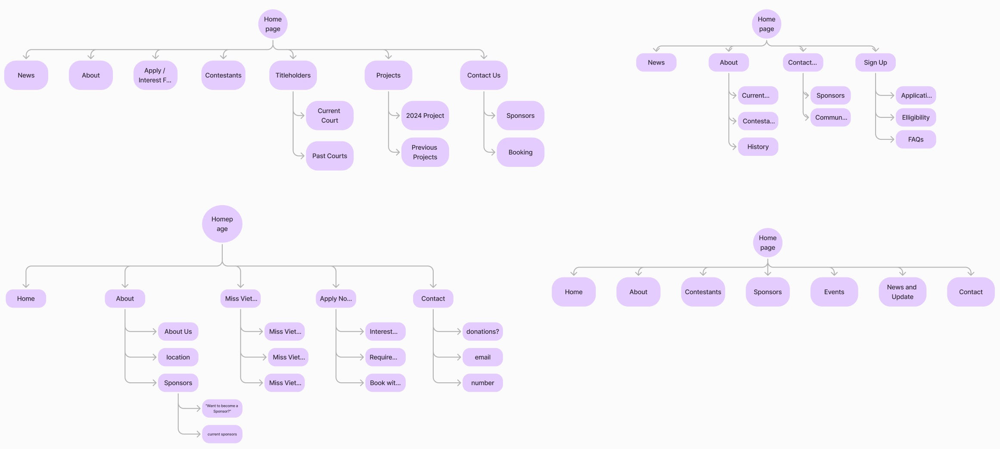After coming up with these initial ideas, we researched what popular pageant websites had as their main categories for inspiration. Based on our key takeaways, the initial information architecture, and our stakeholder's content, we decided on the following information architecture:
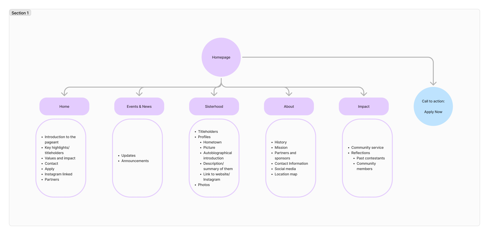DESIGN AND PROTOTYPING
Low Fidelity Prototype
Putting together our research findings, we crafted our low fidelity prototype. The lo-fi helped us block out sections on each page for the different types of information that would be added, as well as their order. Because there was a lot of content from MVSD to include, we had to come up with organized ways to store or display the information. Some of the most common design components we used to do so are as follows:
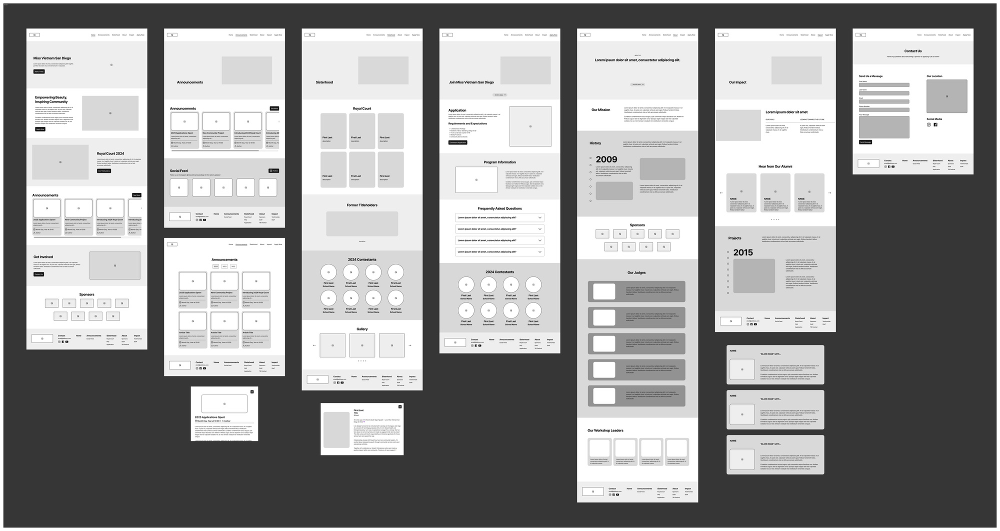Cards: Used for emphasizing certain information, such as announcements and testimonials. They were also used for displaying prominent images for the Royal Court titleholders, as well as Miss Vietnam San Diego's staff.
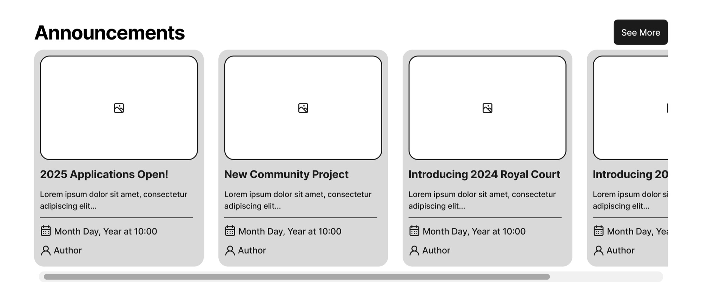

Carousels: Helped prevent pages from becoming too long and let more images be showcased in the site. They were used to display previous Royal Court generations, Miss Vietnam San Diego's history, and their community projects over the years.
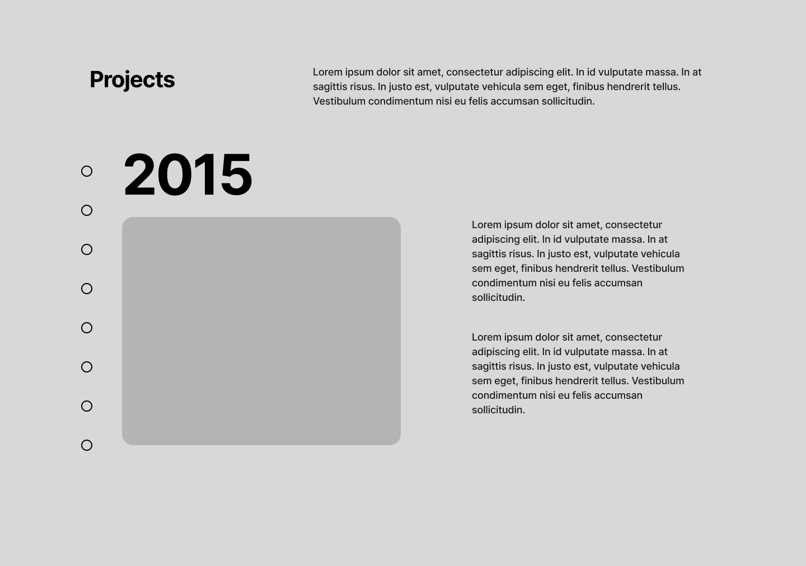
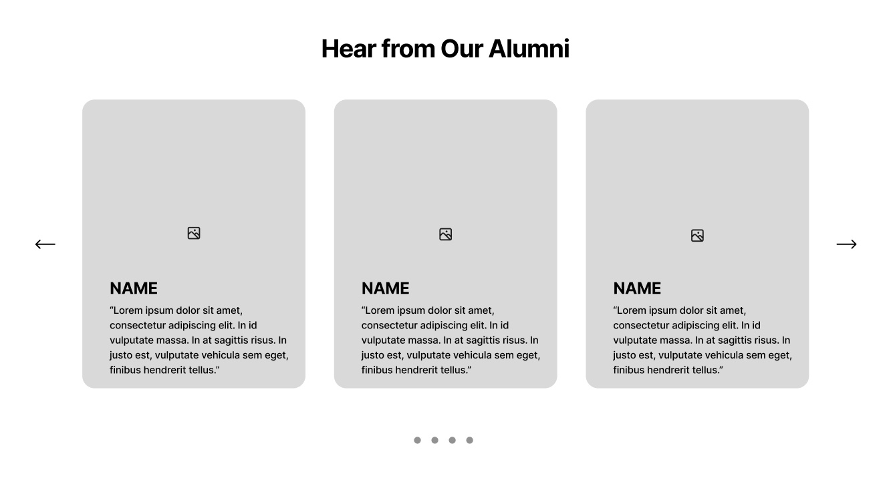
To ensure sections were concise and visually engaging, we paired up content with larger images to avoid walls of text. This enhanced Miss Vietnam San Diego's legitimacy and professionalism as we showcased an array of their high-quality photos.
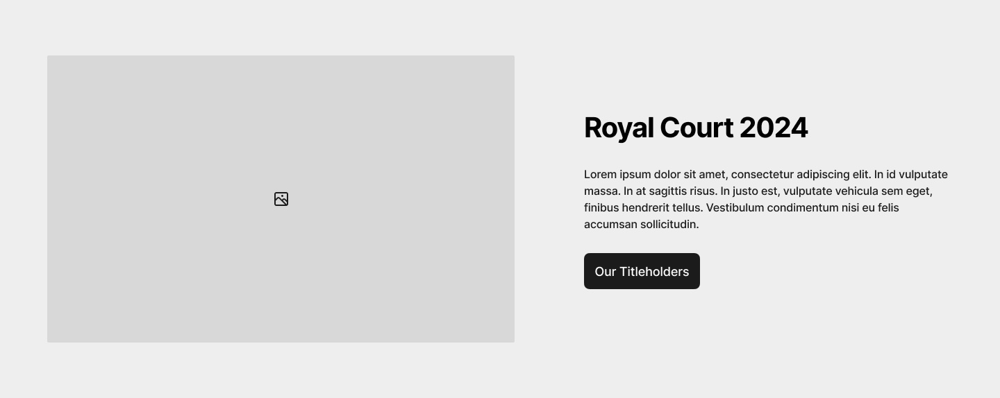
High Fidelity Prototype
Moving forwords, we finalized and made some stylized changes in our designs, focusing on functionality and keeping things visually concise and engaging. Below is an overview of our high fidelity prototype.
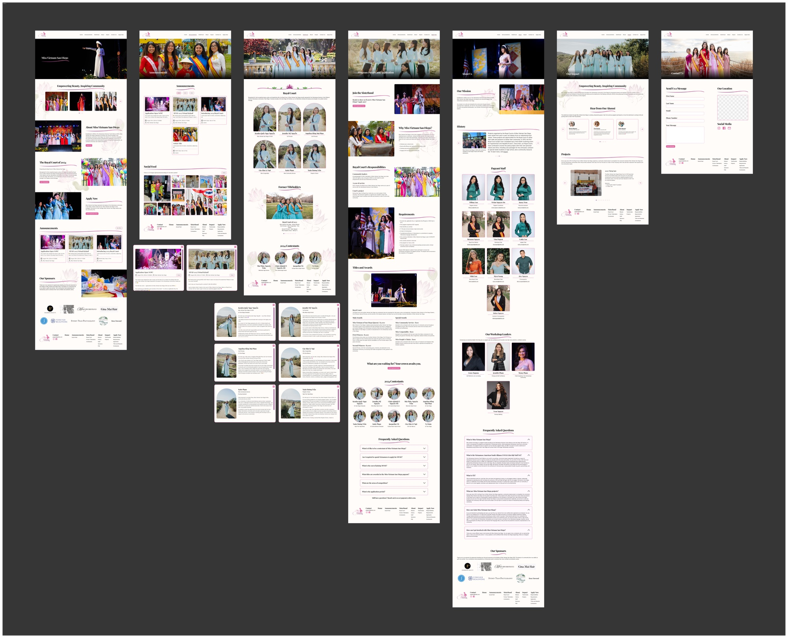High quality images created a professional and elegant tone for the website, helping attract sponsors and contestants.
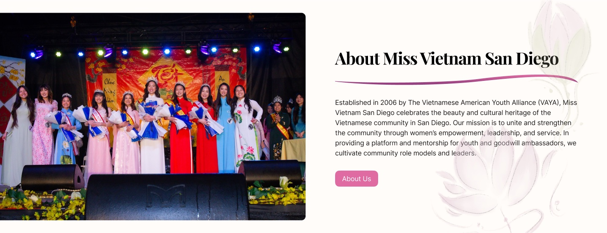
Important information for contestants was consolidated onto the application page for easy access.
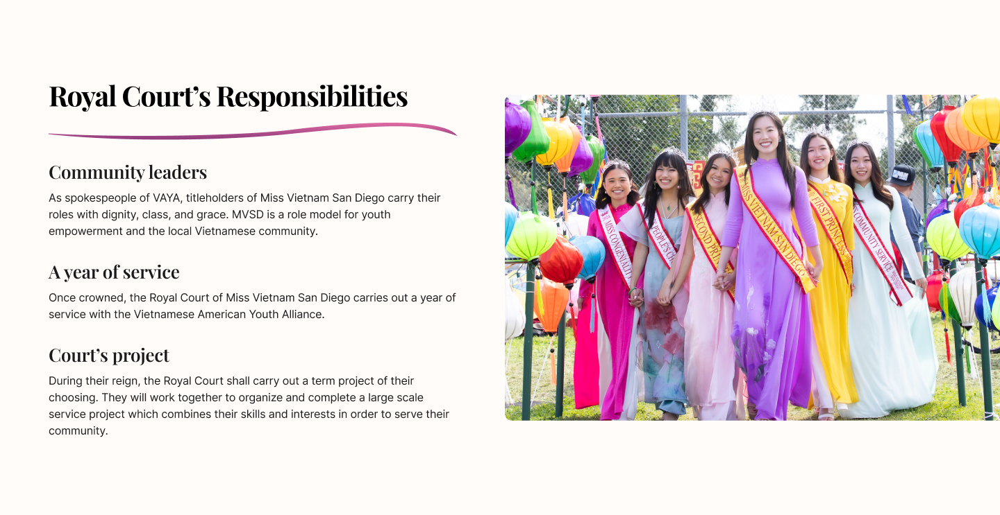
When prototyping our projects carousel, we made some changes to the original design from the low fidelity prototype. Adding arrow buttons on each side created and shifting the layout horizontally created a clearer indication for users to easily access other projects.
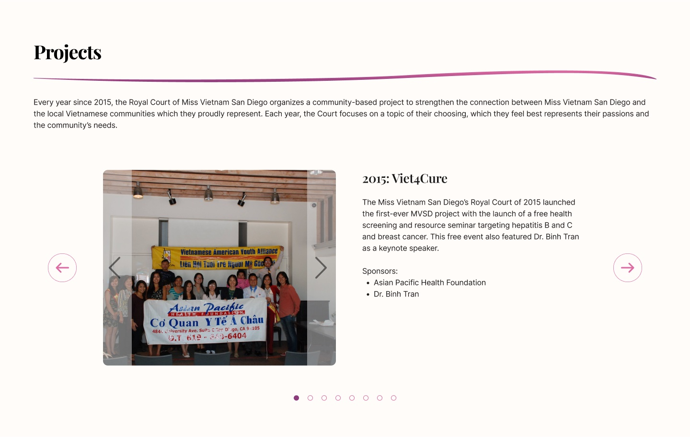
When prototyping our alumni carousel, we created a hover effect over each card to indicate that the cards are clickable. Once clicked, more information on each testimonial pops up so users can access the information easily.
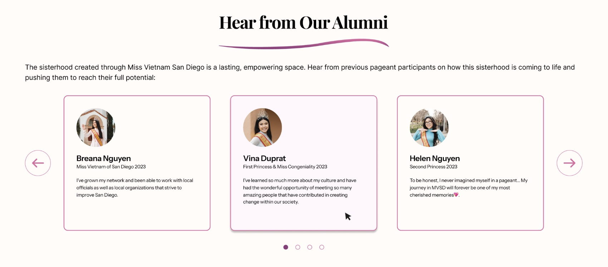
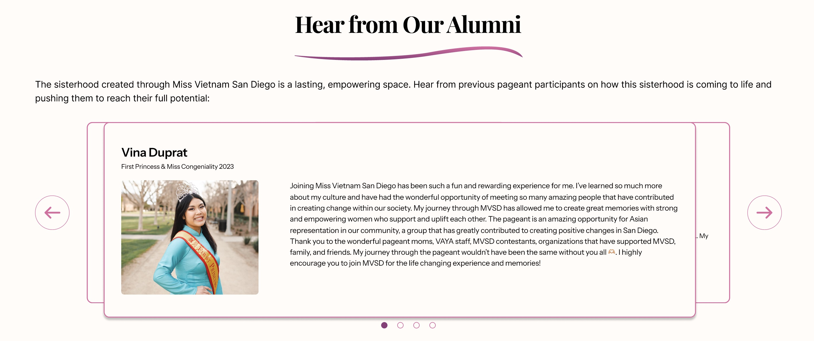
Finally, we also adapted these designs to a mobile format due to user research insights that contestants are more likely to be directed from Instagram.
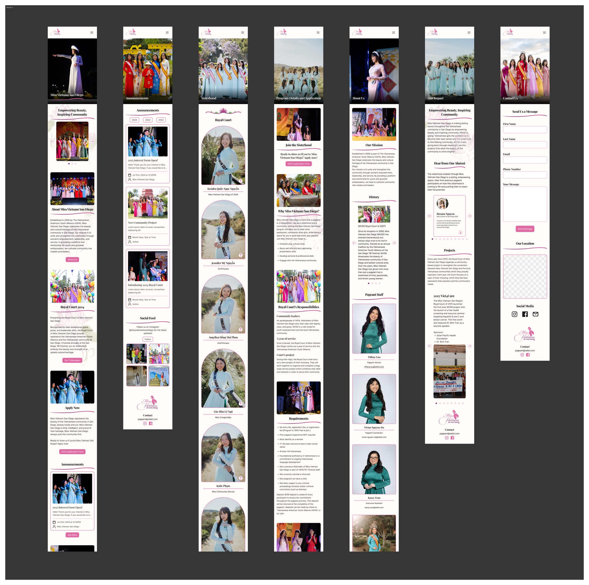MOVING FORWARD
Next Steps
Additional user testing is needed to gather feedback on usability and functionality, ensuring the site meets the needs of all target audiences before the final launch.
What I've learned
This internship was one of my first real-life experiences working with a structured design team and stakeholders. I have learned a tremendous amount through my fellow teammates and stakeholders. Whether it was learning a technical skill like Figma prototyping, or how to be a high-functioning team, I have grown a lot as a new designer and hope to continue to learn from new experiences moving forward!